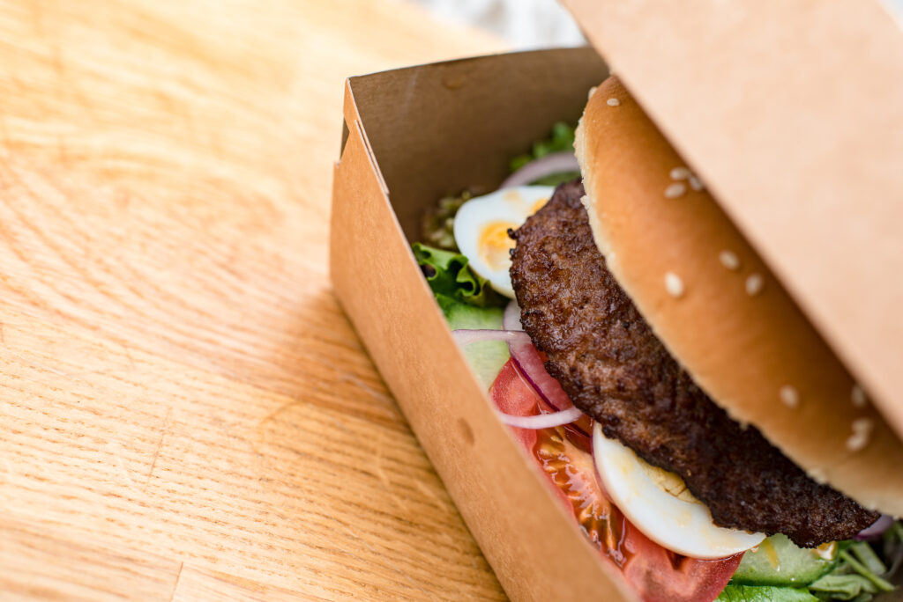
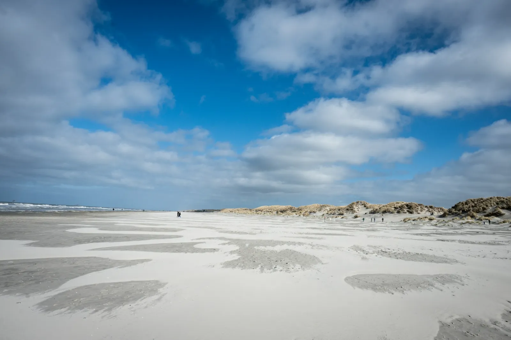

Strandweg 65 · Buren, Ameland
Friet, snacks en grillburgers aan de Strandweg
Burgers van de lavagrill met rundvlees van de plaatselijke slager, friet of raspatat en huisgemaakte specials. Voor op het strand, de camping of gewoon thuis.
Do t/m ma open van 14.00 tot 20.00 uur

- Friet of raspatat
- Goede kwaliteit snacks
- Grillburgers van de lokale slager
- Spareribs, schnitzel of saté
- Loaded fries
- Maandspecials
- Salades


Gebakken met zorg, verpakt zonder plastic
Wij frituren in hoogwaardige plantaardige frituurolie van Nederlandse bodem. En al onze verpakkingen zijn 100% duurzaam.
Onze verpakkingen en disposables komen van Natureko: gemaakt van palmblad, suikerriet en polylactide uit agrarische reststromen.
- Plantaardige frituurolievan Nederlandse bodem
- 100% natuurlijken plasticvrij
- Biologisch afbreekbaarverpakkingen en disposables
- Klimaatneutraalgecompenseerd via erkende klimaatprojecten

Op Ameland
Ameland is het noordelijkste Waddeneiland, vijftig minuten varen met de veerboot. Vier dorpjes, 27 kilometer zandstrand en fiets- en wandelroutes door duin en bos. Zo'n 600.000 gasten per jaar, en het hele jaar door iets te doen.
Na een dag uitwaaien op het strand haalt u bij ons in Buren een bak friet, een grillburger of een softijsje.
Openingstijden
- Donderdag14.00 – 20.00
- Vrijdag14.00 – 20.00
- Zaterdag14.00 – 20.00
- Zondag14.00 – 20.00
- Maandag14.00 – 20.00
- Dinsdaggesloten
- Woensdaggesloten
Contact
Snackcounter AmelandStrandweg 65
9164 KA Buren (Ameland)
0519 - 54 28 61
info@snackcounter-ameland.nl
Voor vragen en bestellingen kunt u gerust contact met ons opnemen.